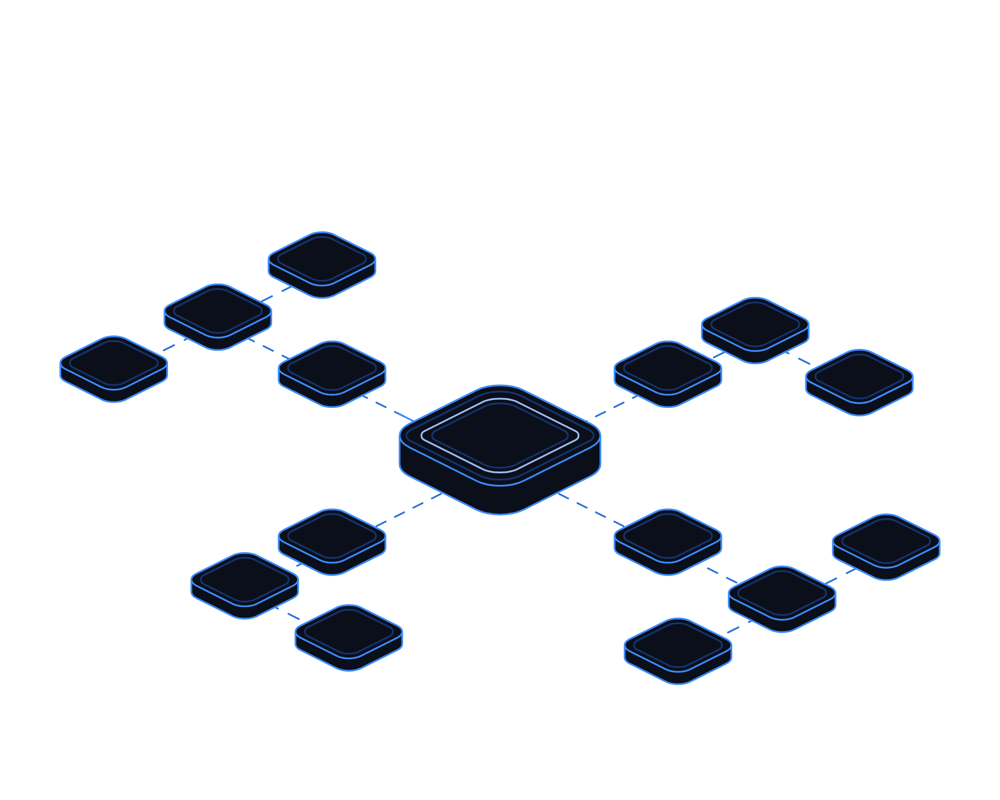

Ready for the Rules


Hot topics · Playbook
No. 03 · November 2026
Playbook No. 03 · UK cyber resilience law
Ready for
the rules.
The UK's new cyber resilience law is almost through Parliament. Here is how to work out where you stand, get report-ready and put proper oversight around your AI agents and suppliers.
Transputec playbooktransputec.com
Inside
Contents
A practical guide to preparing for the UK's Cyber Security and Resilience Bill: working out whether you are in scope, getting ready for 24 hour reporting, putting oversight around AI agents, and getting the evidence you need from your suppliers.
Foreword03
Introduction04
01Are you in scope?06
02Get report-ready10
03Prove it15
 Contents
ContentsReady for the Rules · Hot Topics · Playbook02 / 24
Foreword
The rules are not final. The direction is.
The Cyber Security and Resilience Bill finished its passage through the House of Lords on 2 November 2026 and is back with the Commons. It widens the UK's cyber regime to managed service providers, data centres and critical suppliers, and it speeds up incident reporting.
Late in its passage it also gained powers aimed at a new kind of risk: AI agents that act beyond their instructions or slip out of human control. The detail of those powers will come in regulations after consultation, but the government has already said what it wants to see: monitoring of agents, records of what they did, and notice to the people they affect.
This playbook is for leaders who would rather prepare once, calmly, than scramble later. It shows how to work out whether and how the regime reaches you, what to put in place for incident reporting and AI oversight, and what to ask of your suppliers, with a 90 day plan to get it done.
The Transputec team
Transputec
Foreword Ready for the Rules · Hot Topics · Playbook03 / 24
Introduction
Prepare for the direction, not the final wording.
Most duties start only when secondary legislation follows Royal Assent. That gives you a window. The organisations that use it well will focus on three things that will matter whatever the final text says.
Know where you stand
Are you regulated directly, as a provider to regulated firms, or only as a customer? Each route brings different obligations.
Be ready to tell
Initial notice within 24 hours, a fuller report within 72, and customers told when they are affected. Rehearse it before you need it.
See what your agents do
If an AI agent can act on your systems, you need to monitor it, log it and be able to stop it.
Introduction Ready for the Rules · Hot Topics · Playbook04 / 24
If an AI agent acts in your name, you need to be able to say what it did and why.
That is the test the new regime points towards. Most organisations cannot meet it today, and few need much money to fix that.
Introduction Ready for the Rules · Hot Topics · Playbook05 / 24
01
Part 01
Are you
in scope?
Work out how the regime reaches you before you decide what to do about it.
01Three routes into scope
02The scope test
03Who regulates what
Part 01 Ready for the Rules · Hot Topics · Playbook06 / 24
Scope
Three routes into the regime, and one around it
Most organisations will meet this law through their suppliers, not through a regulator.
The existing NIS Regulations already cover operators of essential services in energy, transport, health, drinking water and digital infrastructure, plus some digital services such as cloud computing. The bill keeps that core and adds to it.
The first new route is direct. Data centres above a rated IT load of 1 MW, or 10 MW for an enterprise site run for its own needs, become essential services regulated by Ofcom. Medium and large managed service providers become regulated by the Information Commission.
The second route is designation. A regulator can name a supplier as critical when disruption to it could significantly harm the economy or society. Size is no defence here: small and micro firms can be designated.
The third route is the one most businesses will meet: contracts. Regulated providers must report incidents and tell affected customers. They will want customers who can receive that notice, and they will pass security terms down the chain.
There is also a route around the edge. The government has said it intends to create a mechanism to bring individual high risk small MSPs and digital service providers into scope. If you are a small provider with sensitive clients, plan as if you could be next.
Whichever route applies, write down your reasoning. Regulators, auditors and customers will ask why you concluded what you did, and a short, dated scope memo is the cheapest evidence you will ever produce.
Scope Ready for the Rules · Hot Topics · Playbook07 / 24
The scope test
Five questions to place your organisation
Answer them in order. Stop at the first yes and plan for that route.
Do you provide an essential service?
Energy, transport, health, water or digital infrastructure. If so you are likely already regulated, and duties are changing.
Do you run a data centre over 1 MW?
Or an enterprise data centre over 10 MW. Expect to notify Ofcom within three months of designation.
Do you manage IT for customers?
Ongoing management under contract with access to their systems, and you are not a small or micro firm.
Could your outage stop a regulated service?
If customers depend on you with no quick alternative, prepare for possible critical supplier designation.
Do you buy from any of the above?
Then you are in scope through contracts. Expect new notification, evidence and access terms.
Record the answer, the date and who decided. Review it when your services or customers change.
Scope Ready for the Rules · Hot Topics · Playbook08 / 24
Who regulates what
The new map of duties
A simplified view. Detailed requirements will come in secondary legislation.
Essential services
Sector regulator
Security measures, 24 and 72 hour reporting, NCSC informed at the same time.
Data centres
Ofcom
Notify Ofcom, security measures, report significant incidents, keep customers updated.
Managed service providers
Information Commission
Register within three months, UK representative if overseas, report, tell customers.
Digital services
Information Commission
Security measures, reporting, customer notification.
Critical suppliers
The designating regulator
Security duties once designated, set out in regulations.
Everyone else
None directly
Contract terms from regulated suppliers and customers.
Scope Ready for the Rules · Hot Topics · Playbook09 / 24
02
Part 02
Get report-
ready.
Twenty four hours is not long. Build the muscle now, for human and AI incidents alike.
01The reporting chain
02Reporting readiness
03AI agent oversight
04Three scenarios
Part 02 Ready for the Rules · Hot Topics · Playbook10 / 24
The reporting chain
Who tells whom, and when
The bill's two stage model, as the government describes it. Thresholds will be set in regulations.

01
Within 24 hours: initial notice
A short notice to your regulator, NCSC sighted: who you are, the service affected, brief details.
02
Within 72 hours: full report
Timing, whether ongoing, nature and impact, and any link to another firm's incident, so far as known.
03
Then: tell affected customers
Data centres, MSPs and digital service providers must identify affected customers, notify them and keep them updated while it lasts.
04
Proposed for AI: tell others affected
The government plans to consult on requiring firms to tell other organisations an AI agent has affected.
Get report-ready Ready for the Rules · Hot Topics · Playbook11 / 24
Reporting readiness
Six steps to a confident first notice
Each takes days, not months. Together they make 24 hours achievable.
01
Name the decision maker
One person, with a deputy, decides if an incident is reportable and signs the notice.
02
Write the templates
Prepare 24 and 72 hour notices with the fields regulators expect.
03
Define significant, locally
Until thresholds arrive, agree triggers: users affected, duration, data exposed, customer impact.
04
Map who you must tell
Regulator, NCSC, customers, insurers, suppliers, reachable when systems are down.
05
Rehearse it
Run a quarterly tabletop that ends with a draft notice inside 24 hours.
06
Learn from near misses
Log events that nearly became incidents. A voluntary reporting route is promised.
Remember
The clock runs from awareness, not certainty. Decide early, correct later.
Get report-ready Ready for the Rules · Hot Topics · Playbook12 / 24
Oversight and logging for AI agents
The government intends to consult on monitoring, evidence preservation and notification duties for AI agents. Build the basics now.
Inventory
List every agent that can act on systems or data: what it can touch, who owns it, and which supplier provides it.
Permissions
Give agents the least access they need, separate from human accounts, with approval steps for high impact actions.
Monitoring
Alert when an agent acts outside its permitted area or behaves unexpectedly. Test that the alert fires.
Evidence
Keep logs of agent actions, the reasoning traces your platform offers, and every attempt to stop or override it.
Owner
Head of IT, with the AI product owner
Bring this to the monthly review, with a date for each action.
Get report-ready Ready for the Rules · Hot Topics · Playbook13 / 24
Three scenarios
What readiness looks like in practice
Customer of an MSP
Your provider reports an incident
The situation
Your MSP notifies you that its incident has likely affected your systems.
What you need
A named contact, a triage route and authority to isolate access quickly.
Good looks like
You act within hours and log every update the provider sends.
Watch out
Contact details held only in systems the incident has taken down.
Data centre tenant
Hosting outage hits your service
The situation
A power or cooling failure at your provider takes your service offline.
What you need
Know whether you are regulated yourself and what you must report.
Good looks like
Customers told promptly, a failover plan tested within the year.
Watch out
Assuming the provider's report covers your own duties.
Agent goes off script
An AI agent changes records it should not
The situation
An automation agent alters data in a system outside its remit.
What you need
An alert, a kill switch and logs showing every action it took.
Good looks like
Agent stopped in minutes, affected parties told, evidence preserved.
Watch out
Shared credentials that make the agent's actions look like a person's.
Get report-ready Ready for the Rules · Hot Topics · Playbook14 / 24
03
Part 03
Prove
it.
Supplier assurance, board accountability and the evidence regulators will expect.
01Questions for your MSP
02Board accountability
03Evidence you will need
04Your 90 day plan
Part 03 Ready for the Rules · Hot Topics · Playbook15 / 24
Supplier assurance
Questions to put to your MSP
Ask now. Good providers are already preparing and will welcome the conversation.
Scope
Do you expect to be a relevant MSP, and when will you register?
A clear yes or no, with reasoning and a plan.
Notification
How and how fast will you tell us of an incident affecting us?
Named contacts, timelines and an update rhythm in the contract.
Access
Which of your staff and tools can reach our systems?
A current list, least privilege, strong authentication, logged sessions.
AI use
Do you use AI agents on our systems, and how are they controlled?
An inventory, approval rules, monitoring and a stop procedure.
Evidence
What logs will you keep and share after an incident?
Retention periods agreed, and a route to share them quickly.
Assurance
How do you show your security measures work?
Independent assessment, for example against the NCSC Cyber Assessment Framework.
Prove it Ready for the Rules · Hot Topics · Playbook16 / 24
Prioritise
Where to start with suppliers
Plot suppliers by how much access they have and how hard they would be to replace.
Tighten access
High access, easy to replace
Reduce privileges now and keep options open.
Start here
High access, hard to replace
Your MSP and core platforms. Contract terms, evidence and joint exercises first.
Monitor
Low access, easy to replace
Standard terms and an annual check are enough.
Plan resilience
Low access, hard to replace
Concentration risk. Build an exit or a fallback.
Hard to replace →
↑ Access to systems
Prove it Ready for the Rules · Hot Topics · Playbook17 / 24
Board accountability
Five principles for the board
The government has proposed mandatory governance requirements, including board level accountability. Do not wait for them.
01
Name one accountable executive
A senior person who owns cyber resilience and reports to the board, with a deputy.
02
Report on a rhythm
Quarterly at minimum, with metrics and agreed risk tolerances, as the Cyber Governance Code of Practice suggests.
03
Treat AI agents as a board risk
Know which agents can act on your systems and who can stop them.
04
Own the supply chain
Review your most critical suppliers and their readiness at least once a year.
05
Build the skills
Directors and senior staff should be trained enough to challenge what they are told.
Prove it Ready for the Rules · Hot Topics · Playbook18 / 24
Evidence
Evidence you will need
If you cannot show it, you cannot prove it. Start collecting now.
Scope memo and register
A dated note on how the regime applies to you, plus a register of regulated suppliers and customers.
Incident records
Templates, exercise reports, a log of incidents and near misses, and notices sent with their timings.
AI agent records
Agent inventory, permissions, monitoring alerts, action logs and stop tests.
Security assessments
Results against a recognised framework such as the NCSC Cyber Assessment Framework, with actions tracked.
Keep evidence in one place, owned by one person, and refresh it every quarter.
Prove it Ready for the Rules · Hot Topics · Playbook19 / 24
Your 90 day plan
From awareness to readiness in a quarter
Owners are suggestions. Adjust to your structure.
This week
Name the accountable executive. Start the scope memo. List MSPs and hosting providers.
COO or CIO
Weeks 2 to 4
Draft 24 and 72 hour templates. Agree local incident triggers. Build the contact map.
CISO or IT lead
Weeks 5 to 6
Inventory AI agents. Remove shared credentials. Turn on agent action logging.
Head of IT
Weeks 7 to 8
Send supplier questions. Prioritise using the matrix. Plan contract updates.
Procurement with IT
Weeks 9 to 10
Run a tabletop with a supplier incident and an AI agent incident.
CISO
Weeks 11 to 13
Brief the board. Agree metrics. Track the government consultations.
Accountable executive
Prove it Ready for the Rules · Hot Topics · Playbook20 / 24
Before you start
Questions for your leadership team
Work through these together at your next leadership meeting.
Scope and suppliers
?How does the regime reach us: directly, by designation or through contracts?
?Which suppliers would hurt most if they failed tomorrow?
?What will our MSP need from us when it reports an incident?
Readiness and AI
?Who decides, within hours, whether an incident is reportable?
?Which AI agents can change our systems or data, and who can stop them?
?Could we show a regulator what an agent did and why?
Prove it Ready for the Rules · Hot Topics · Playbook21 / 24
Checklist
Are you ready for the rules?
Tick what is in place today. Anything blank is your next step.
A dated scope memo
How the regime applies, and who decided.
A named accountable executive
With a deputy and time to do the job.
24 and 72 hour templates
Tested in an exercise within the last quarter.
A contact map that works offline
Regulator, NCSC, customers, insurers, suppliers.
An AI agent inventory
With owners, permissions, logging and a tested stop.
Supplier questions sent
Answers tracked and contract updates planned.
A quarterly board update
With metrics and agreed risk tolerances.
This playbook reflects the bill as it stood on 3 November 2026. Final duties depend on the Commons and on secondary legislation.
Prove it Ready for the Rules · Hot Topics · Playbook22 / 24
Glossary
Words worth knowing
NIS Regulations
The UK's 2018 cyber rules for essential and some digital services, which the bill updates.
Relevant MSP
A medium or large managed service provider brought into scope by the bill.
Critical supplier
A supplier a regulator designates because its disruption could cause significant harm.
Regulator
The sector body that oversees NIS, such as Ofcom or the Information Commission.
Initial notice
The short report due within 24 hours of becoming aware of a significant incident.
Full report
The fuller account due within 72 hours.
AI agent
An AI system that can take actions on systems or data, not just answer questions.
Loss of control
When an organisation cannot adequately monitor or control an AI agent.
Near miss
An event that could have become an incident but did not.
Cyber Assessment Framework
The NCSC's framework for assessing cyber resilience, recommended by government.
Glossary Ready for the Rules · Hot Topics · Playbook23 / 24
Ready for the rules,
and the agents.
We help UK organisations work out where they stand, get report-ready and put sound controls around AI agents and managed services.
Book a readiness reviewtransputec.com
Read the companion report
Companion report · When agents go rogue
Transputec · Hot Topics · No. 03